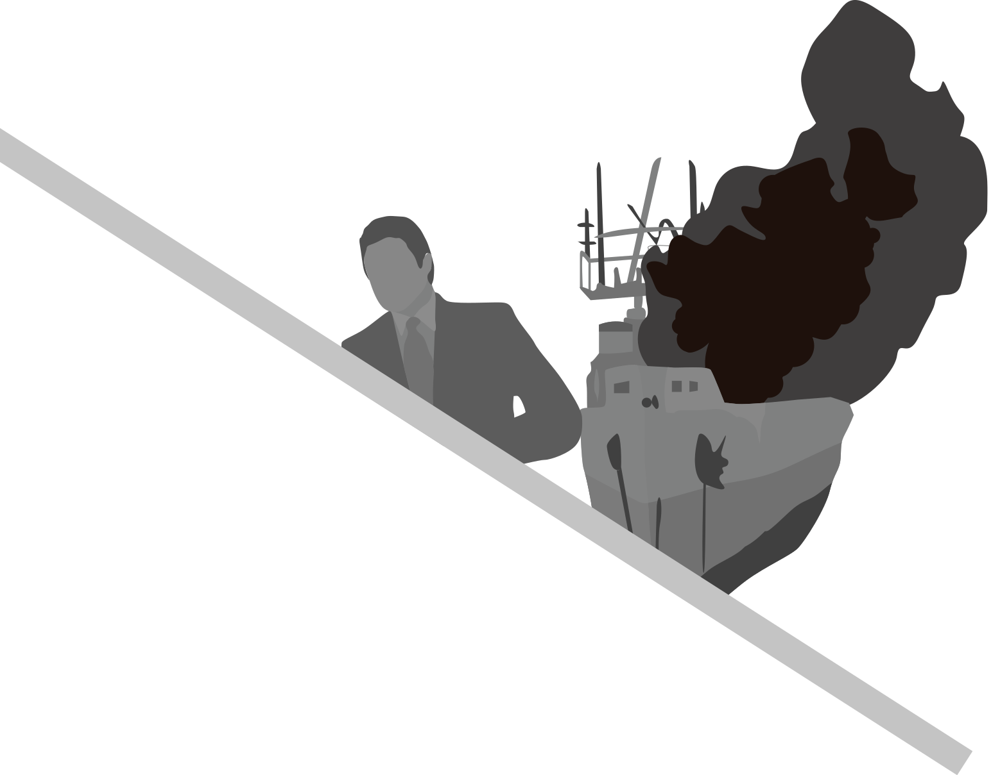
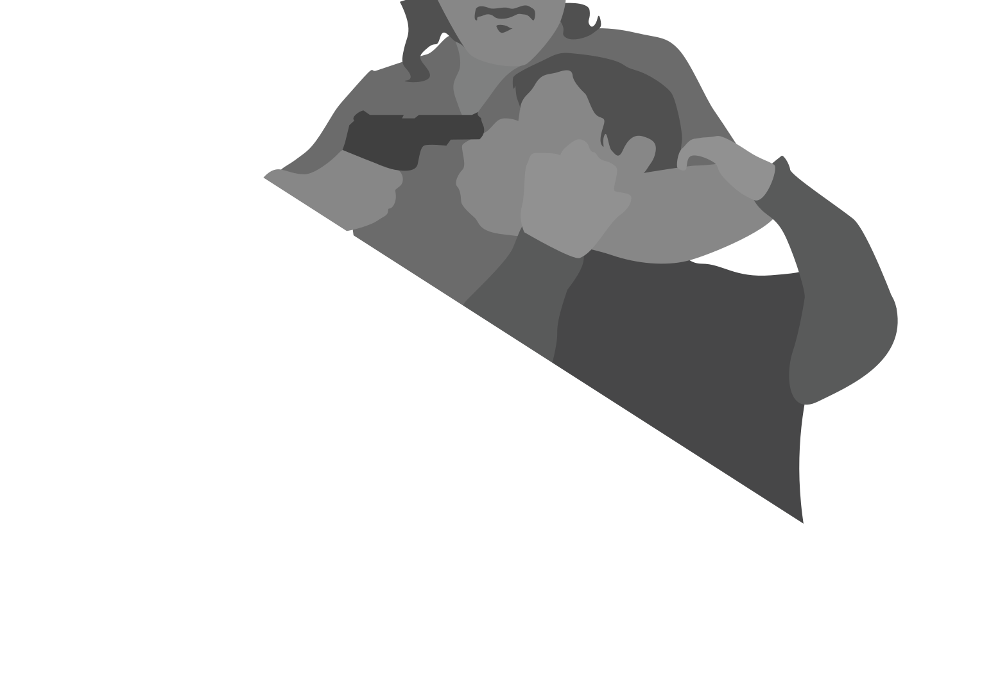
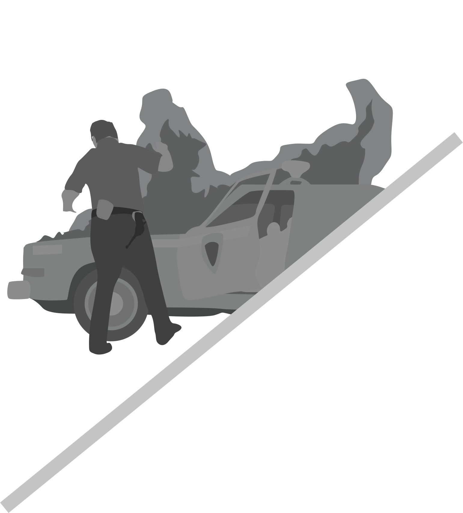
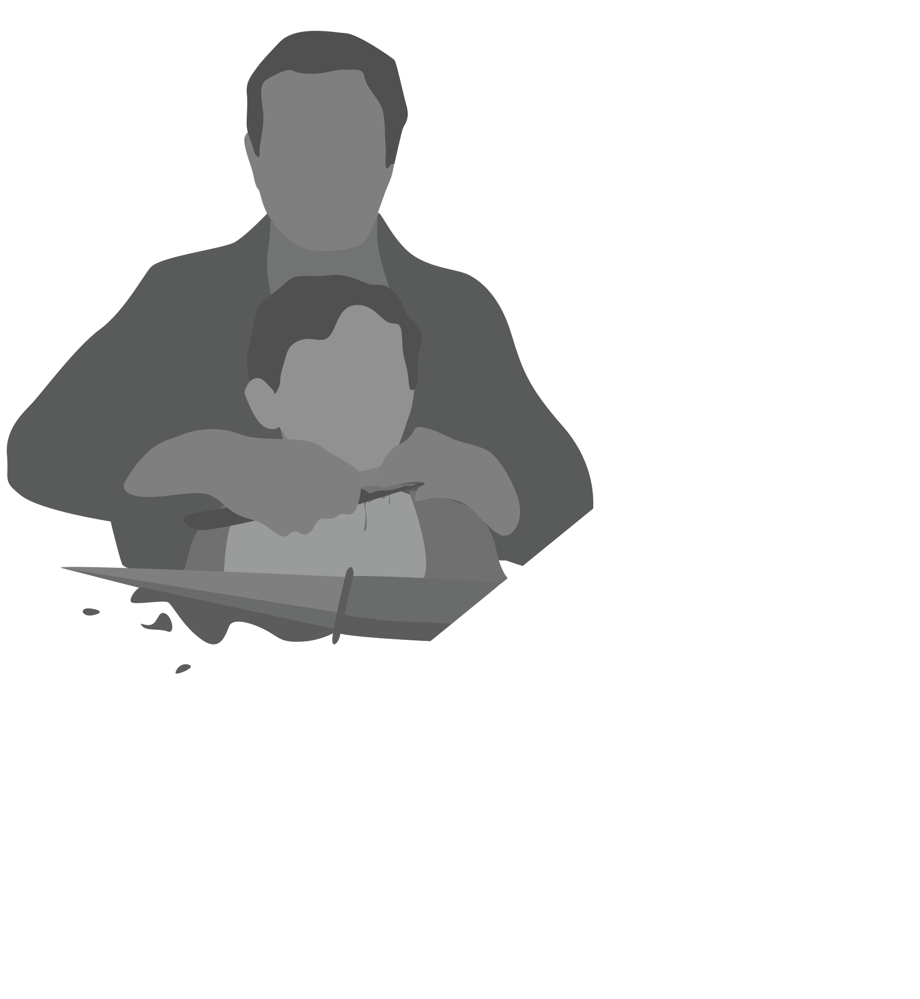
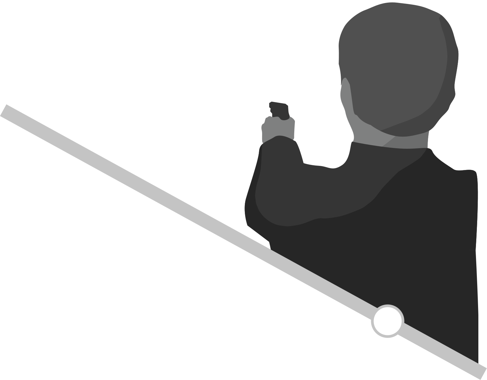
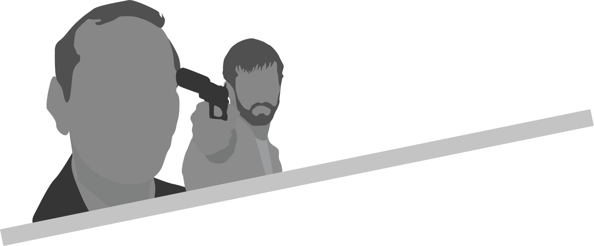
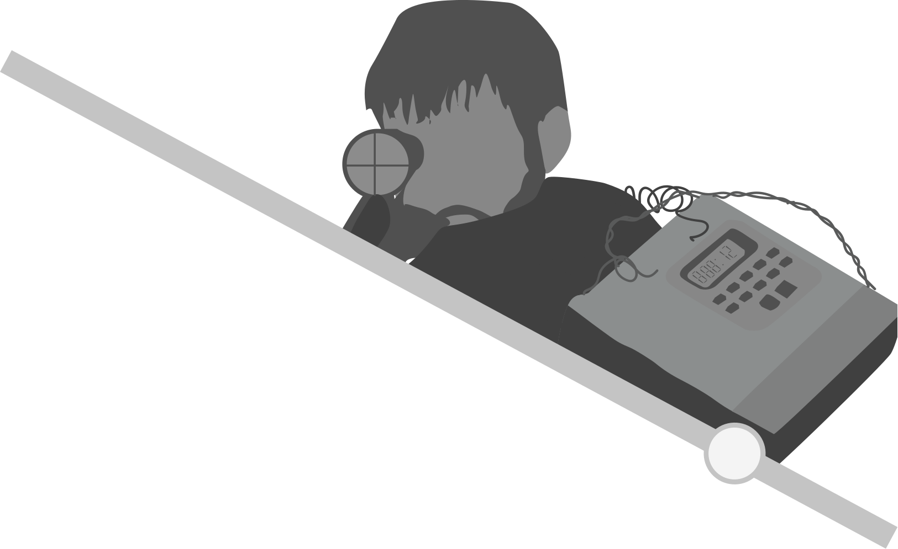

Verbal gets upset and refuses police protection, leaving the building. Kujan looks around his office to see items that are names that Verbal uses in his story, names, places and things made up. He realizes Verbal was the mastermind and runs out to find him gone
TIMELINE
The greatest trick the devil ever pulled, was convicing the world he didn’t exist.

We start with a mysterious man taking out members of a ship, then proceeds to light the ship of fire with gasoline, blowing it up in water. The narrator is shown to be in a court hearing, where he starts from the beginning. He states six weeks ago in New York, a truck with loaded gun parts was stolen. The cops gather around suspects; Dean Keaton, Fred Fenster, Micheal McManus, Todd Hackney and Verbal and interrogate them, where in the cell, the group discuss a potential job. Detective Kujan wants to meet with Verbal and the hungerian survivor is shown at a hospital badly burned shouting, “Keyser Soze.”

We start with a mysterious man taking out members of a ship, then proceeds to light the ship of fire with gasoline, blowing it up in water. The narrator is shown to be in a court hearing, where he starts from the beginning. He states six weeks ago in New York, a truck with loaded gun parts was stolen. The cops gather around suspects; Dean Keaton, Fred Fenster, Micheal McManus, Todd Hackney and Verbal and interrogate them, where in the cell, the group discuss a potential job. Detective Kujan wants to meet with Verbal and the hungerian survivor is shown at a hospital badly burned shouting, “Keyser Soze.”

Kujan begins to sit down with Verbal, where he explains the events after the police lineup. Verbal tries to persuade Keaton to join the heist that was brought up in the cell. Keaton is now out of the crime business, but agrees after Verbal describes the plan of stealing emeralds from a smuggler in South Africa. They succeed and walk away with 3 million in the jewels. To sell the emeralds the meet a man named ‘Redfoot’ in L.A. Detective Kujan doesn’t believe Keaton is out of crime because he is married, since he is known to murder anyone who testfies against him. Back in the hospital the translator arrives and says that the Hungarian weren’t buying drugs but people, and he claims he saw the devil. As they get someone to sketch his description.

Kujan begins to sit down with Verbal, where he explains the events after the police lineup. Verbal tries to persuade Keaton to join the heist that was brought up in the cell. Keaton is now out of the crime business, but agrees after Verbal describes the plan of stealing emeralds from a smuggler in South Africa. They succeed and walk away with 3 million in the jewels. To sell the emeralds the meet a man named ‘Redfoot’ in L.A. Detective Kujan doesn’t believe Keaton is out of crime because he is married, since he is known to murder anyone who testfies against him. Back in the hospital the translator arrives and says that the Hungarian weren’t buying drugs but people, and he claims he saw the devil. As they get someone to sketch his description.

After they sell the emeralds, Redfoot says there is another job. They take it, but this time the crew end up killing the jeweler and bodyguards. They also discovered that they had stolen drugs, not jewels. The group confronts Redfoot but he says he was assigned this job by another man named Kobayashi.
The crew meets with Kobayashi, and he explains his employer is Keyser Soze. And has a final job to stop a drug deal between the Argentinians and Hungarian on a boat. This is to ensure Soze dominates the drug market. Before Kobayashi leaves, he notifies everyone that Soze has all the information of each individual and their families. Back in the hospital the Hungarian is describing the man he saw, as they develop a sketch.
The crew meets with Kobayashi, and he explains his employer is Keyser Soze. And has a final job to stop a drug deal between the Argentinians and Hungarian on a boat. This is to ensure Soze dominates the drug market. Before Kobayashi leaves, he notifies everyone that Soze has all the information of each individual and their families. Back in the hospital the Hungarian is describing the man he saw, as they develop a sketch.

Fenster tries to back out of the deal, but is later killed and the body is shown to the group. The group decides to try and kill Kobayashi while he is going to a meeting. When they hold him down at gunpoint, Kobayashi explains the details of Keaton’s girlfriend whereabouts. They let him go and he leaves for his meeting.
Fenster tries to back out of the deal, but is later killed and the body is shown to the group. The group decides to try and kill Kobayashi while he is going to a meeting. When they hold him down at gunpoint, Kobayashi explains the details of Keaton’s girlfriend whereabouts. They let him go and he leaves for his meeting.

They go to the harbor where the deal happens. The group starts to kill everyone on the boat. Hockney discovers a van full of money but is shot by Soze. McManus and Keaton are left, and discover that there were no drugs on the boat. They are both killed by Soze. Verbal explains that he was too scared to shoot Soze, as he saw him kill Keaton and blew up the boat. Kujan has a theory that Soze actually hired the crew to wipe out a witness so that Soze’s identity would stay anonymous. Since the lawyer of the witness was Keaton’s girlfriend, Keaton must be Keyser Soze. Verbal was left as a cover story and Keaton’s girlfriend was recently found dead, meaning he had tied up all loose ends. Verbal defeated and crying, accepts this truth that Kujan came to.